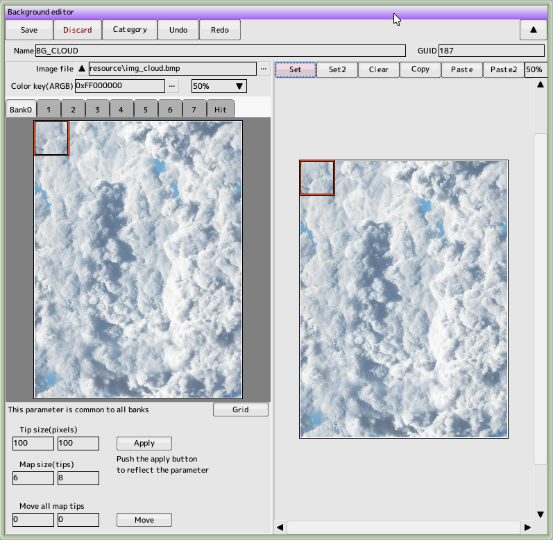
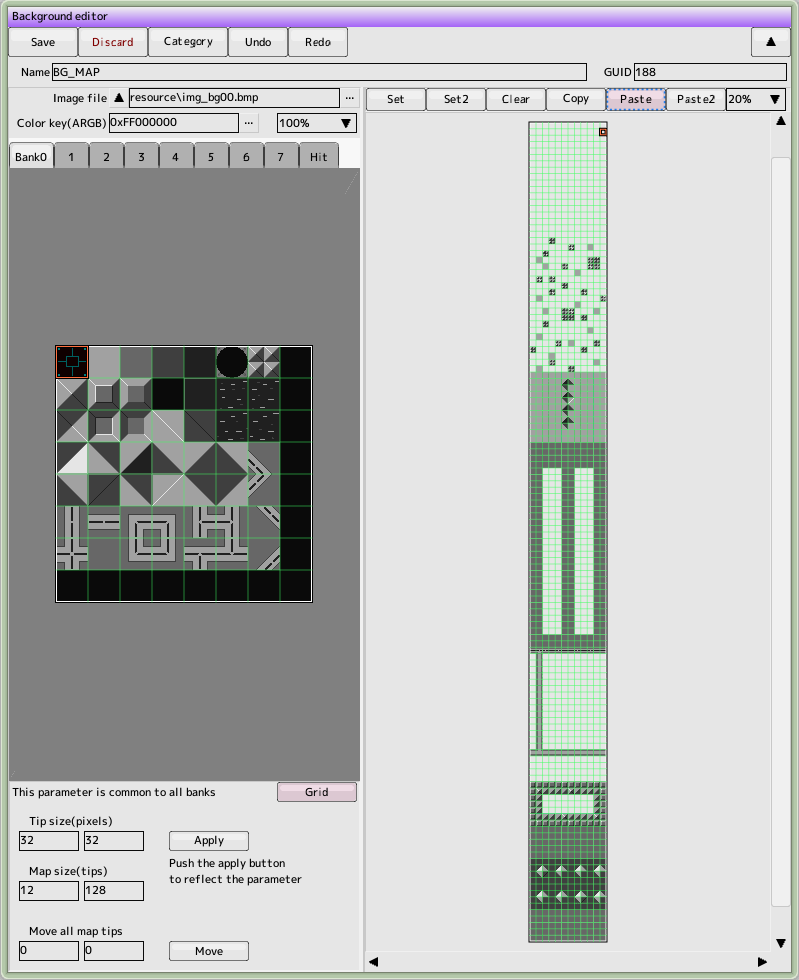
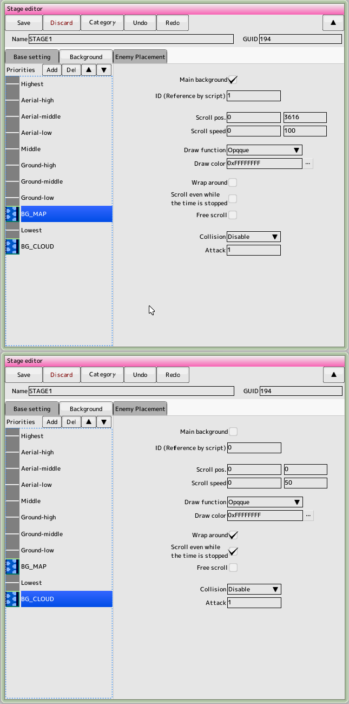
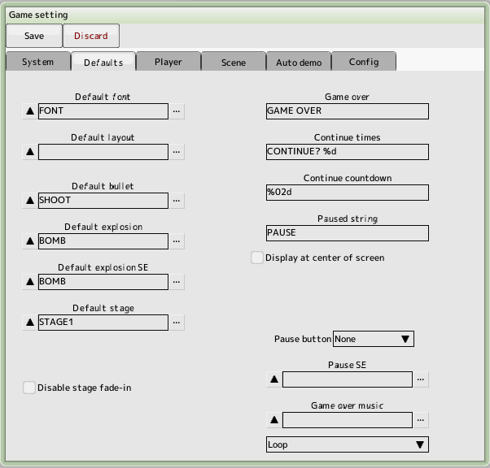
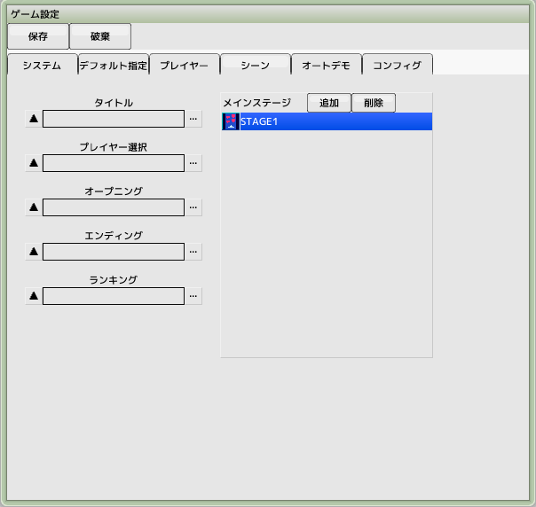
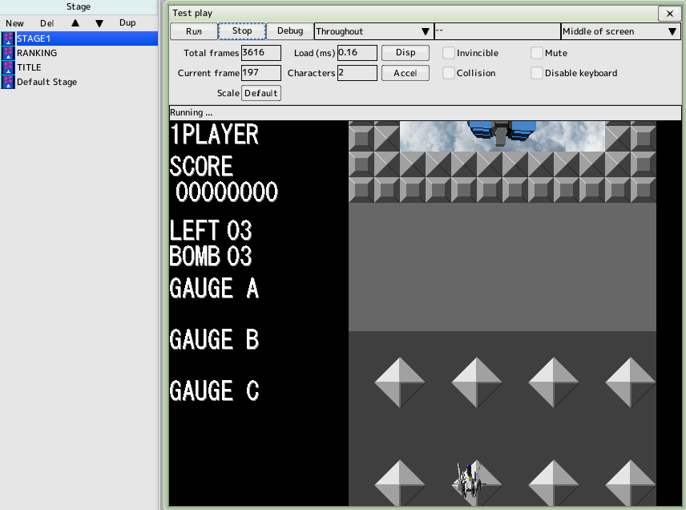

back to the original page
back to the original page
8. Create a background
There are two main types of backgrounds. In this case we will create both
1. background as just a loop-scrolling image
2. a background that is synchronized with the placement of ground objects and characters
Keep the project file created in the previous tutorial open

Create a loop-scrolling background
Create a new project background
Name it 'BG_CLOUD'
Load the image file 'resource/img_cloud.bmp'
Since the image is as large as 600x800, try to shrink it to fit in the screen
Make the chip size to 100,100 and the map size to 6,8
(Click the Update button)
Select all preview images on the left side (red box)
Switch the right side map to set mode and place all map chips
The background for the loop scroll is now complete

Create the background to place the ground object
Create a new project background
Name it 'BG_MAP'
Load the image file 'resource/img_bg00.bmp'
Make the chip size to 32,32 and the map size to 12,128
(Click the Update button)
Use scaling (wheel) and scrolling (right-drag) to better position the map parts since the map size is quite large
If you fill the whole map, you won't be able to see the background at the back of the map, so place it well

Create a stage and set the background
Create a new project stage
Name it 'STAGE1'
Open the Background Preference Settings tab, leaving the Basic Settings tab untouched
Click the Add Priority List button to add BG_MAP
Click the upward triangle to change the priority
Set the parameters of BG_MAP as shown in the figure to the right
Don't forget to set the scrolling position to be the starting map display position
Check the main background because it will be used for ground object placement
Click the Add Priority List button to add BG_CLOUD
Set the parameters of BG_CLOUD as shown on the right
Loop scrolling by checking the wraparound

Set to default stage
Open the Default Specifications tab of the game settings
Register 'STAGE1' to the default stage

Register to the main stage
Open the Scenes tab of the game settings
Add 'STAGE1' to the main stage
Registering to the main stage will allow you to test in full play

Test Play
Display the Test Play window and drag and drop 'STAGE1' in the project's stage list to the window
The test mode changes to a single stage, your plane appears and the background begins to scroll
Back to top of page